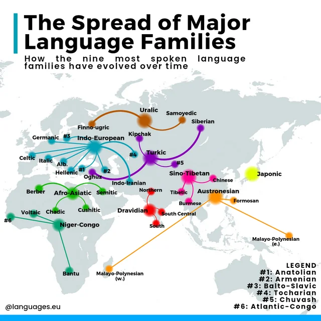
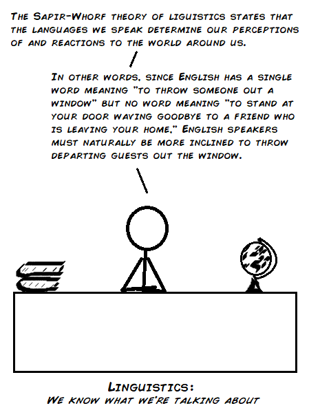
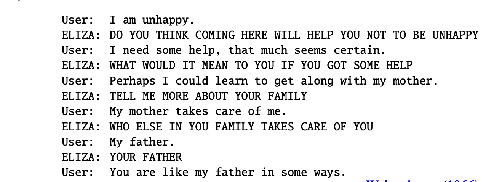
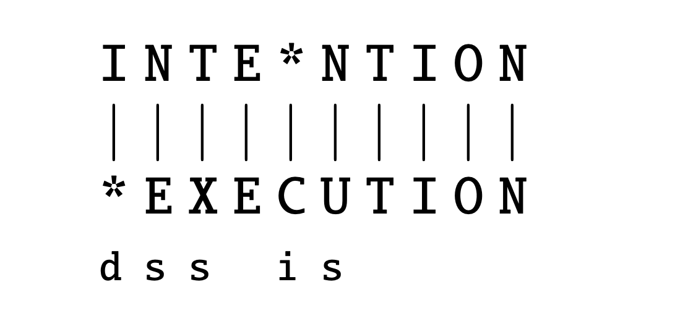
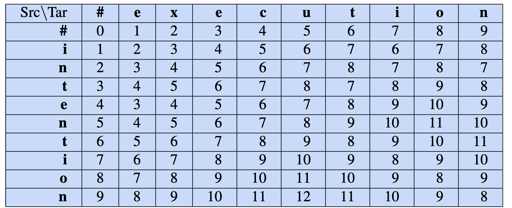
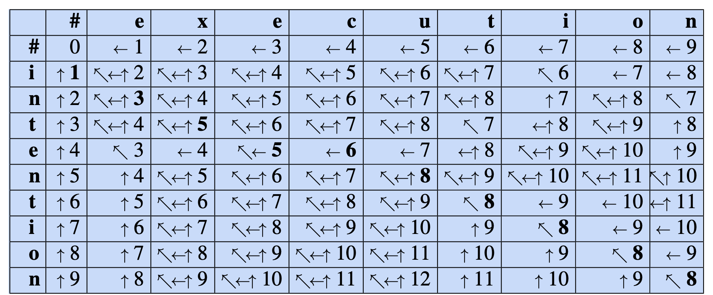

Natural Language Processing: Intro
Lviv University
History
History

Stats
When?
Approximately between 200,000 years ago and 60,000 years ago (between the appearance of the first anatomically modern humans in southern Africa and the last exodus from Africa respectively)
How many?
Human languages count: 7097 (as of 2018).
Intelligent behaviour
Speaker (writer)
- has the goal of communicating some knowledge
- then plans some language that represents the knowledge
- and acts to achieve the goal
Listener (reader)
- perceives the language
- and infers the intended meaning.
Reasons for NLP
- To communicate with humans.
- To learn.
- To advance the scientific understanding of languages and language use
Goal of natural language
A medium for communication
rather than pure representation.
Plato vs Sophists
Sophists argued that physical reality can only be experienced through language.
Sapir-Whorf hypothesis
Language impacts cognition. Also known as linguistic relativity.
Predecessors
Australian aboriginal language Guugu Yimithirr have no words for relative (or ego- centric) directions, such as front, back, right, or left. Instead they use absolute directions, saying, for example, the equivalent of “I have a pain in my north arm.”
(Norvig “Artificial Intelligence: A Modern Approach”)
Predecessors
Wilhelm von Humboldt: language as a spirit of a nation.
Sapir-Whorf hypothesis
Deep structure
Wanner experiment (1974)
Subjects remember exact words with 50% accuracy but remember the content with 90% accuracy.
Hence - there must an internal nonverbal representation.
Polanyi’s paradox (1966)
The theory that human knowledge of how the world functions and of our own capability are, to a large extent, beyond our explicit understanding. (aka tacit knowledge).
Formal language
Definition
A formal language \(L\) over an alphabet \(\Sigma\) is a subset of \(\Sigma^*\), that is, a set of words over that alphabet.
Language model
Definition
We define a language model as a probability distribution describing the likelihood of any string.
ELIZA
ELIZA - an example of primitive pattern matching.
Regex
Regular expressions - a tool for describing text patterns.
Definition
An algebraic notation for characterizing a set of strings
Regex
Definition
A Kleene algebra is a set \(A\) together with two binary operations \(+: A \times A \rightarrow A\) and \(\cdot : A \times A \rightarrow A\) and one function \(\ast : A \rightarrow A\), written as \(a + b\), \(ab\) and \(a\ast\) respectively, so that the following axioms are satisfied.
Associativity of \(+\) and \(\cdot\): \(a + (b + c) = (a + b) + c\) and \(a(bc) = (ab)c\) \(\forall a, b, c \in A\).
Commutativity of \(+\): \(a + b = b + a\) \(\forall a, b \in A\)
Distributivity: \(a(b + c) = (ab) + (ac)\) and \((b + c)a = (ba) + (ca)\) \(\forall a, b, c \in A\)
Identity elements for \(+\) and \(\cdot\): \(\exists 0 \in A:\forall a \in A: a + 0 = 0 + a = a\); \(\exists 1 \in A: \forall a \in A: a1 = 1a = a\).
Annihilation by 0: \(a0 = 0a = 0 \forall a \in A\). The above axioms define a semiring.
\(+\) is idempotent: \(a + a = a \quad \forall a \in A\).
Regex
Ordering
It is now possible to define a partial order \(\leq\) on \(A\) by setting \(a \leq b\) if and only if \(a + b = b\) (or equivalently: \(a \leq b\) if and only if \(\exists x \in A: a + x = b\).
With any definition, \(a \leq b \leq a \Rightarrow a = b\). With this order we can formulate the last four axioms about the operation \(\ast\):
- \(1 + a(a\ast) leq a\ast \forall a in A\).
- \(1 + (a\ast)a \leq a\ast \forall a in A\).
- if a and x are in A such that \(ax \leq x\), then \(a\ast x \leq x\)
- if a and x are in A such that \(xa \leq x\), then \(x(a\ast) \leq x\).
Intuitively, one should think of a + b as the “union” or the “least upper bound” of a and b and of ab as some multiplication which is monotonic, in the sense that \(a \leq b \Rightarrow ax \leq bx\).
The idea behind the star operator is \(a\ast = 1 + a + aa + aaa + ...\). From the standpoint of programming language theory, one may also interpret + as “choice”, \(\cdot\) as “sequencing” and \(\ast\) as “iteration”.
Regex
Concatenation
A sequence of characters
/someword/| Regex | Example |
|---|---|
| /alt/ | The alternative option would be… |
| /simple/ | A simple regex |
Regex
Disjunction
A single character to choose among multiple options
/[asd]/| Regex | Example |
|---|---|
| /[0123456789]/ | Some number examples are 0, 3, 5 |
| /[rgx]/ | A simple regex |
Regex
Disjunction with range
A single character to choose among multiple options
/[a-z]/| Regex | Example |
|---|---|
| /[a-z]/ | Phone number: 067-1234567 |
Regex
Cleene *
Zero or more occurrences of the previous character or regex.
| Regex | Example |
|---|---|
| /[a-z]*/ | Phone number: 067-1234567 |
Regex
Cleene +
One or more occurrences of the previous character or regex.
| Regex | Example |
|---|---|
| /[a-z]+/ | Phone number: 067-1234567 |
Regex
Wildcard dot
Any character except newline
| Regex | Example |
|---|---|
| /.+/ | Phone number: 067-1234567 |
| /beg.n/ | begin, began, begun |
Regex
Anchors
Matching beginning and end of lines
| Regex | Example |
|---|---|
| /^/ | Start of line |
| /$/ | End of line |
/\b/ |
Word boundary |
/\B/ |
Non-word boundary |
Regex
Disjunction operator
Either/or for strings
| Regex | Example |
|---|---|
/cat|dog/ |
Raining cats and dogs |
Regex
Grouping
Used for precedence
| Regex | Example |
|---|---|
/(cat|dog)*/ |
Raining cats and dogs |
Regex
Substitutions
Used for precedence
| Regex | Before | After |
|---|---|---|
s/(cat|dog)*/frog/ |
Raining cats and dogs | Raining frogs and frogs |
s/behaviour/behavior/ |
Cognitive-behavioural therapy | Cognitive-behavioral therapy |
Regex
ELIZA sample
User1: Men are all alike.
ELIZA1: User2: They’re always bugging us about something or other.
ELIZA2: CAN YOU THINK OF A SPECIFIC EXAMPLE
User3: Well, my boyfriend made me come here.
ELIZA3: YOUR BOYFRIEND MADE YOU COME HERE
User4: He says I’m depressed much of the time.
ELIZA4: I AM SORRY TO HEAR YOU ARE DEPRESSEDELIZA sample
s/.* YOU ARE (depressed|sad) .*/I AM SORRY TO HEAR YOU ARE \1/
s/.* YOU ARE (depressed|sad) .*/WHY DO YOU THINK YOU ARE \1/
s/.* all .*/IN WHAT WAY/
s/.* always .*/CAN YOU THINK OF A SPECIFIC EXAMPLE/Parsing
Corpus
A computer-readable collection of text or speech.
Punctuation
Marks indicating how a piece of written text should be read and understood.
Utterance
Spoken correlate of a sentence.
Parsing
Disfluency
Break or disruption that occurs in the flow of speech.
Two types:
- fragments
- fillers
Parsing
Word types
Are the number of distinct words in a corpus; if the set of words in the vocabulary is \(V\) , the number of types is the vocabulary size \(|V|\).
Word instances
Are the total number \(N\) of running words.
(sometimes also called word tokens).
Example
To be, or not to be, that is the question.
Parsing
| Corpus | Types = \(|V|\) | Instances = \(N\) |
|---|---|---|
| Shakespeare | 31 thousand | 884 thousand |
| Brown corpus | 38 thousand | 1 million |
| Switchboard telephone conversations | 20 thousand | 2.4 million |
| COCA | 2 million | 440 million |
| Google n-grams | 13 million | 1 trillion |
Parsing
Herdan’s Law (Herdan, 1960) or Heaps’ Law (Heaps, 1978)
\[ |V|= kN^{\beta}. \] Here \(k\) and \(\beta\) are positive constants, and \(0 <\beta <1\).
Parsing
Zipf’s law
If \(t_1\) is the most common term in the collection, \(t_2\) is the next most common, and so on, then the collection frequency \(cf_i\) of the \(i\)-th most common term is proportional to \(\frac{1}{i}\): \[ cf_i \propto \frac{1}{i}, \] or \[ cf_i = ci^k. \]
Parsing
Wordforms
Example: cat vs cats. We say these two words are different wordforms but have the same lemma.
Lemma
A lemma is a set of lexical forms having the same stem, and usually the same major part-of-speech.
Example
The wordform is the full inflected or derived form of the word. The two wordforms cat and cats thus have the same lemma, which we can represent as cat.
Parsing
Morphemes
The smallest meaning-bearing unit of a language.
Examples
Indistinguisble -> [in, distinguish, able]Affixes
Affix taxonomy
Affixes are classified into two types:
- According to their position in the word
- According to their function in a phrase or sentence.
By position
- Prefixes
- Infixes
- Suffixes.
- Circumfixes (Georgian, Malay)
Affixes
By function
- Derivational affixes are for creating new words usually by changing the part of speech or the meaning or both to the words when they are added to.
They can be prefixes or suffixes e.g. unkind , kingship etc.
- Inflectional affixes mark the grammatical categories e.g. –s in girls
Language morphology
- analytical (English)
- inflected (Ukrainian)
- agglutinative (partially German)
Corpora
Varieties depending on:
- languages
- language varieties
- genres
- time
- speaker demographics
Parsing
Text normalization consists of:
- Tokenizing (segmenting) words
- Normalizing word formats
- Segmenting sentences
Tokenization
Two types:
- top-down
- bottom-up
Top-down tokenization
- break off punctuation as a separate token
- internal punctuation: Ph.D., AT&T
- prices ($45.55) and dates (18/02/2025)
- URLs (https://www.stanford.edu),
- Twitter hashtags (#nlproc)
- email addresses (someone@cs.colorado.edu).
- number expressions introduce complications: e.g. 555,500.50.
- clitic contractions:
I'm,l'homme.
Top-down tokenization
Penn Treebank tokenization standard
Used for the parsed corpora (treebanks) released by the Lin- guistic Data Consortium (LDC).
- separates out clitics (doesn’t becomes does plus n’t)
- keeps hyphenated words together
- separates out all punctuation
Top-down tokenization
nltk.regexp_tokenize
>>> text = ’That U.S.A. poster-print costs $12.40...’
>>> pattern = r’’’(?x) # set flag to allow verbose regexps
... (?:[A-Z]\.)+ # abbreviations, e.g. U.S.A.
... | \w+(?:-\w+)* # words with optional internal hyphens
... | \$?\d+(?:\.\d+)?%? # currency, percentages, e.g. $12.40, 82%
... | \.\.\. # ellipsis
... | [][.,;"’?():_‘-] # these are separate tokens; includes ], [
... ’’’
>>> nltk.regexp_tokenize(text, pattern)
[’That’, ’U.S.A.’, ’poster-print’, ’costs’, ’$12.40’, ’...’]Top-down tokenization
Word tokenization is more complex in languages like written Chinese, Japanese, and Thai, which do not use spaces to mark potential word-boundaries.
Morphemes In Chinese
for example, words are composed of characters (called hanzi in Chinese). Each character generally represents a single unit of meaning (a morpheme).
Word segmentation
For Japanese and Thai the character is too small a unit, and so algorithms for word segmentation are required.
Bottom-up tokenization
Definition
We use the data to infer the tokens. We call these tokens subwords.
Parts
- token learner: produces a vocabulary of tokens
- token segmenter: takes a test sentence and segments it into tokens
Examples
- byte-pair encoding (Sennrich et al., 2016)
- unigram language modeling (Kudo, 2018)
- SentencePiece (Kudo and Richardson, 2018)
BPE
Token Learner
Start with a vocabulary that is just the set of all individual characters.
Examine the training corpus, choose the two symbols that are most frequently adjacent
2.1. For example, if (‘A’, ‘B’) frequently occur together, it will add a new merged symbol ‘AB’ to the vocabulary
2.2. And replaces every adjacent ’A’ ’B’ in the corpus with the new ‘AB’.
Continue counting and merging, creating new longer and longer character strings, until \(k\) merges have been done creating k novel tokens; \(k\) is thus a parameter of the algorithm.
4.The resulting vocabulary consists of the original set of characters plus \(k\) new symbols.
BPE
Note
The algorithm is usually run inside words (not merging across word boundaries), so the input corpus is first white-space-separated to give a set of strings, each corresponding to the characters of a word, plus a special end-of-word symbol , and its counts.
BPE
function BYTE-PAIR ENCODING(strings C, number of merges k) returns vocab \(V\)
\(V \leftarrow\) unique characters in C # initial set of tokens is characters
for i = 1 to k do # merge tokens k times
\(\quad\) \(t_L\), \(t_R\) \(\leftarrow\) #Most frequent pair of adjacent tokens in C
\(\quad\) \(t_{NEW} \leftarrow t_L + t_R\) # make new token by concatenating
\(\quad\) \(V \leftarrow V + t_{NEW}\) # update the vocabulary
\(\quad\) Replace each occurrence of \(t_L\), \(t_R\) in \(C\) with \(t_{NEW}\). # update the corpus
return \(V\)
BPE
Token Segmenter:
- Runs on the merges we have learned from the training data on the test data.
- It runs them greedily, in the order we learned them. (Thus the frequencies in the test data don’t play a role, just the frequencies in the training data).
Word Normalization
Simplest method: case folding.
Note
Not very useful for text classification: compare US (the country) and us (pronoun).
Lemmatization
The task of determining that two words have the same root, despite their surface differences.
be \(\rightarrow\) is, are
Performed using morphological parsing.
Word Normalization
Morphological parsing
Splitting each word into morphemes of two types:
- stems
- affixes
Naive version: stemming
This means just dropping affixes.
Word Normalization
Porter stemmer
- classify every character in a given token as either a consonant (“c”) or vowel (“v”)
- group subsequent consonants as “C” and subsequent vowels as “V.”
- represent every word token as a combination of consonant and vowel groups.
Porter Stemmer
Example
collection \(\rightarrow\) CVCV…C
illustrate \(\rightarrow\) VCVC…V
Both can be presented as:
\[ [C](VC)^m[V] \]
m is called the measure of the word.
Porter Stemmer

Porter Stemmer
Rules
Standard form: \[ (\textbf{condition})\textbf{S}_1 \rightarrow \textbf{S}_2 \] There are five phases of rule application
How to read
If a word ends with the suffix \(S_1\)
AND
the stem before \(S_1\) satisfies the given condition
THEN \(S_1\) is replaced by \(S_2\).
Porter Stemmer
Conditions
- \(\ast S\): the stem ends with S (and similarly for the other letters)
- \(\ast v \ast\): the stem contains a vowel
- \(\ast d\): the stem ends with a double consonant (e.g. -TT, -SS)
- \(\ast o\): the stem ends with \(cvc\), where the second c is not W, X or Y (e.g. -WIL, -HOP)
And the condition part may also contain expressions with and, or and not.
Example
\((m > 1) EMENT \rightarrow\) will perform this transformation:
replacement \(\rightarrow\) replac
Word Normalization
Other stemmers:
Lovins stemmer
The first published stemming algorithm, is essentially a heavily parametrized find-and-replace function.
- compares each input token against a list of common English suffixes, each suffix being conditioned by one of twenty-nine rules
- if the stemmer finds a predefined suffix in a token and removing the suffix does not violate any conditions attached to that suffix (such as character length restrictions), the algorithm removes that suffix.
- the stemmer then runs the resulting stemmed token through another set of rules that correct for common malformations, such as double letters (such as hopping becomes hopp becomes hop).
Word Normalization
Snowball stemmer
An updated version of the Porter stemmer. It differs from Porter in two main ways:
- While Lovins and Porter only stem English words, Snowball can stem text data in other Roman script languages, such as Dutch, German, French, or Spanish. Also has capabilities for non-Roman script languages.
- Snowball has an option to ignore stop words.
Word Normalization
Lancaster stemmer (also called Paice stemmer)
The most aggressive English stemming algorithm.
- it contains a list of over 100 rules that dictate which ending strings to replace.
- the stemmer iterates each word token against each rule. If a token’s ending characters match the string defined in a given rule, the algorithm modifies the token per that rule’s operation, then runs the transformed token through every rule again.
- the stemmer iterates each token through each rule until that token passes all the rules without being transformed.
Word Normalization
Stemming errors
- over-generalizing (lemmatizing
policytopolice) - under-generalizing (not lemmatizing
EuropeantoEurope)
Sentence Tokenization
Challenges
- multi-purpose punctuation
- abbreviation dictionaries
Edit distance
Definition
Minimum edit distance between two strings is defined as the minimum number of editing operations:
- insertion
- deletion
- substitution
needed to transform one string into another.
Edit distance
String alignment

Edit distance
Levenshtein distance
Each of the 3 operations has cost 1.
Alternatively, we can forbid substitutions (this is equivalent to saying that substitutions have cost 2).

Edit distance
Wagner-Fischer minimum edit distance algorithm.
Notation
- \(X\): source string with length \(n\)
- \(Y\): target string with length \(m\)
- \(D[i,j]\): edit distance between \(X[1..i]\) and \(Y[1..j]\).
- \(D[n,m]\): edit distance between \(X\) and \(Y\).
Calculation
\[ D[i,j] = \min \begin{cases} D[i-1,j] + \text{del_cost}(source[i]),\\ D[i,j-1] + \text{ins_cost}(target[j]),\\ D[i-1,j-1] + \text{sub_cost}(source[i], target[j]). \end{cases} \]
Edit distance
Calculation without substitution
\[ D[i,j] = \min \begin{cases} D[i-1,j] + 1,\\ D[i,j-1] + 1,\\ D[i-1,j-1] + \begin{cases} 2; \quad \text{if} \quad source[i] \neq target[j]), \\ 0; \quad \text{if} \quad source[i] = target[j]) \end{cases} \end{cases} \]
Edit distance
Wagner-Fischer algorithm
function MIN-EDIT-DISTANCE(source, target) returns min-distance
\(n \leftarrow LENGTH(source)\)
\(m \leftarrow LENGTH(target)\)
Create a distance matrix \(D[n+1,m+1]\)
# Initialization: the zeroth row and column is the distance from the empty string
D[0,0] = 0
for each row i from 1 to n do
\(\quad\) \(D[i,0] \leftarrow D[i-1,0]\) + del_cost(source[i])
for each column j from 1 to m do
\(\quad\) \(D[0,j] \leftarrow D[0, j-1] + ins-cost(target[j])\)
Edit distance
Wagner-Fischer algorithm
# Recurrence relation:
for each row i from 1 to n do
\(\quad\) for each column j from 1 to m do
\(\quad\) \(\quad\) \(D[i, j] \leftarrow MIN( D[i−1, j]\) + del_cost(source[i]),
\(\quad\)\(\quad\) \(\quad\) \(D[i−1, j−1] + sub\_cost(source[i], target[j])\),
\(\quad\)\(\quad\) \(\quad\) \(D[i, j−1] + ins\_cost(target[j]))\)
# Termination
return D[n,m]
Edit distance
Cost alignment
Edit distance
Hamming distance
A number of positions at which the corresponding symbols are different.
Therefore, identical to Levenshtein with only substitution allowed.
Can only work for strings of similar length.
def hamming_distance(string1: str, string2: str) -> int:
"""Return the Hamming distance between two strings."""
if len(string1) != len(string2):
raise ValueError("Strings must be of equal length.")
dist_counter = 0
for n in range(len(string1)):
if string1[n] != string2[n]:
dist_counter += 1
return dist_counter